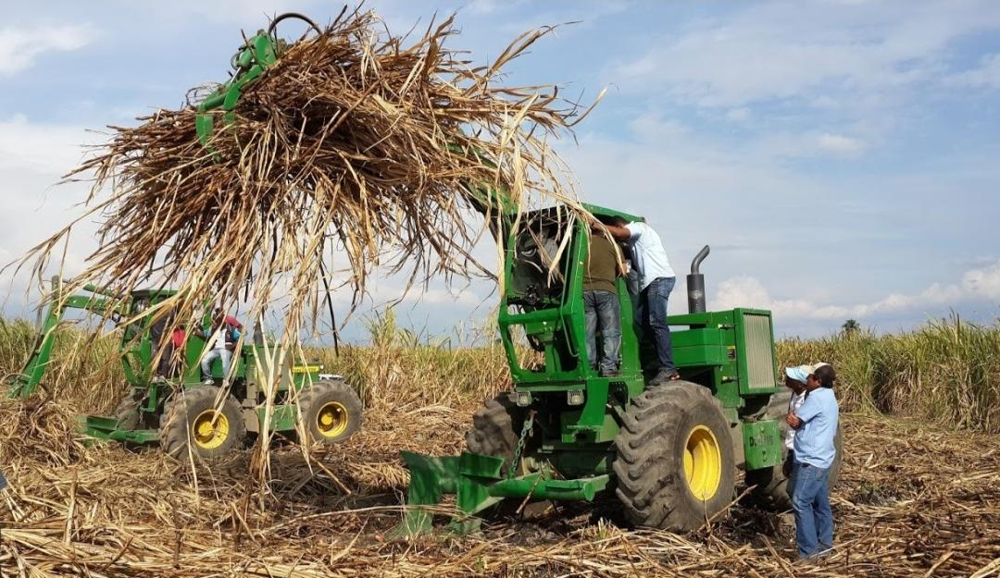
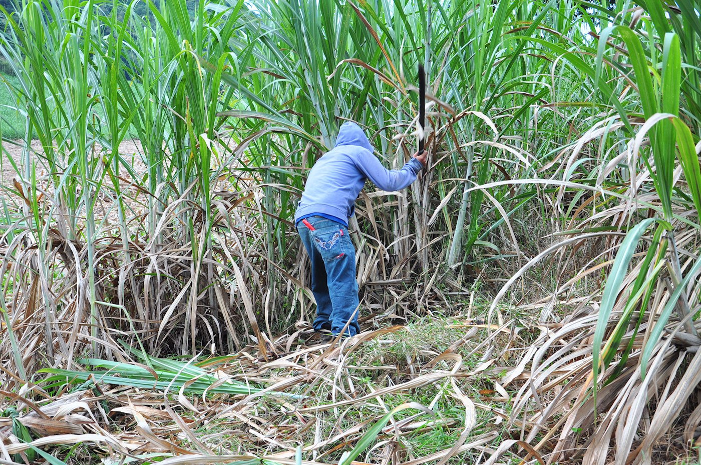

La economía de San Antonio Texas Veracruz se basa principalmente en la agricultura, siendo el cultivo de la caña de azúcar la actividad más importante. Este producto representa una fuente fundamental de ingresos para muchas familias, ya que genera empleo y contribuye al desarrollo económico de la comunidad.
La caña de azúcar no solo se utiliza para la producción de azúcar, sino también para otros derivados que tienen valor comercial. Gracias a esta actividad, muchas personas pueden sostener sus hogares y mejorar su calidad de vida.
Además de la caña de azúcar, también se cultivan otros productos como el maíz, el elote y diversas frutas. Estas actividades complementan la economía local y permiten el abastecimiento de alimentos para el consumo diario.
En conjunto, estas actividades económicas permiten que el pueblo se mantenga activo, fortaleciendo la estabilidad de la comunidad y promoviendo el desarrollo regional.

La caña de azúcar es una de las principales actividades económicas en muchas regiones de Veracruz, y representa una fuente fundamental de empleo y sustento para miles de familias. Cada temporada de zafra, muchas personas provenientes de Texas y otras zonas cercanas llegan a trabajar en el corte de caña, buscando una oportunidad para generar ingresos y mejorar su calidad de vida. Este trabajo, aunque es pesado y requiere gran esfuerzo físico, se ha convertido en una tradición que une a comunidades enteras.
El corte de caña no solo beneficia a quienes trabajan directamente en el campo, sino que también impulsa la economía local. A su alrededor se generan múltiples actividades como el transporte, la venta de alimentos, herramientas y servicios, lo que permite que más personas obtengan ingresos. De esta manera, la caña de azúcar no solo es un cultivo, sino un motor económico que sostiene a muchas familias.
Además, la caña de azúcar tiene un gran valor en la industria, ya que de ella se obtienen diversos productos como azúcar, piloncillo, alcohol y otros derivados que son utilizados tanto a nivel nacional como internacional. Esto hace que su producción sea aún más importante para el desarrollo económico de la región.
Volver al inicio